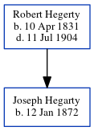

Joseph Hegarty 1872 -
[ Home ] | [ Calendar ] | [ Surnames Index ] | [ Census Index ] | [ Family History ]The child of Robert Hegerty, Joseph Hegarty, the three times great-uncle of Michele Copp (née Phillips), was born in Castledermot, Kild, Ireland on Jan 12, 18721 and baptized there.
Parents
- Robert was born on Apr 10, 1831
Citations
- Ireland, Select Births and Baptisms, 1620-1911 Ancestry.com Operations, Inc.
Family Tree
Generated by ged2site. Last updated on Jun 11, 2024